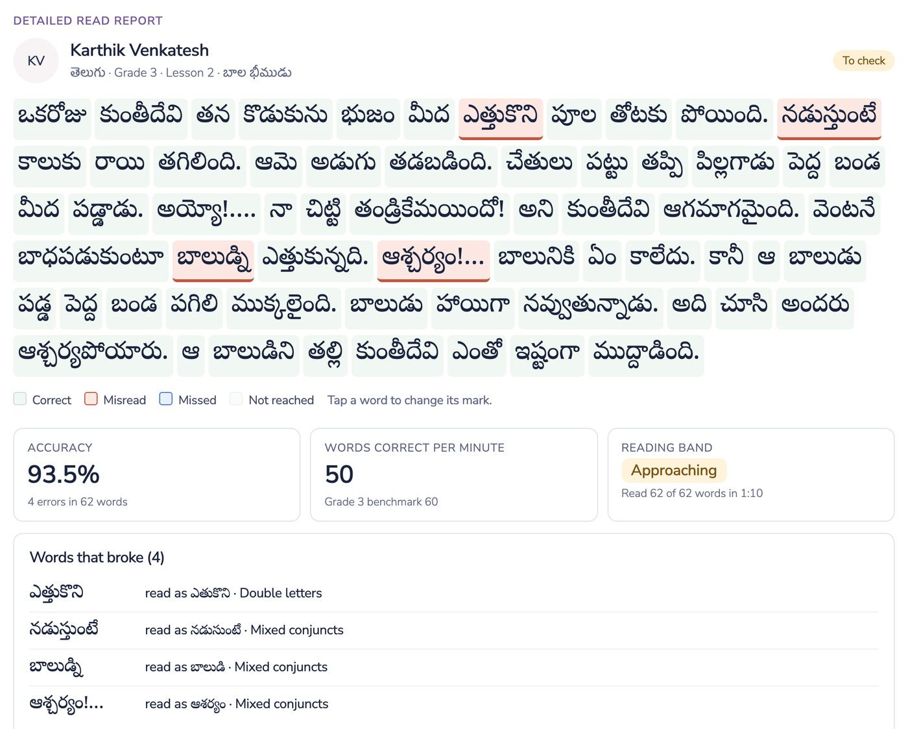
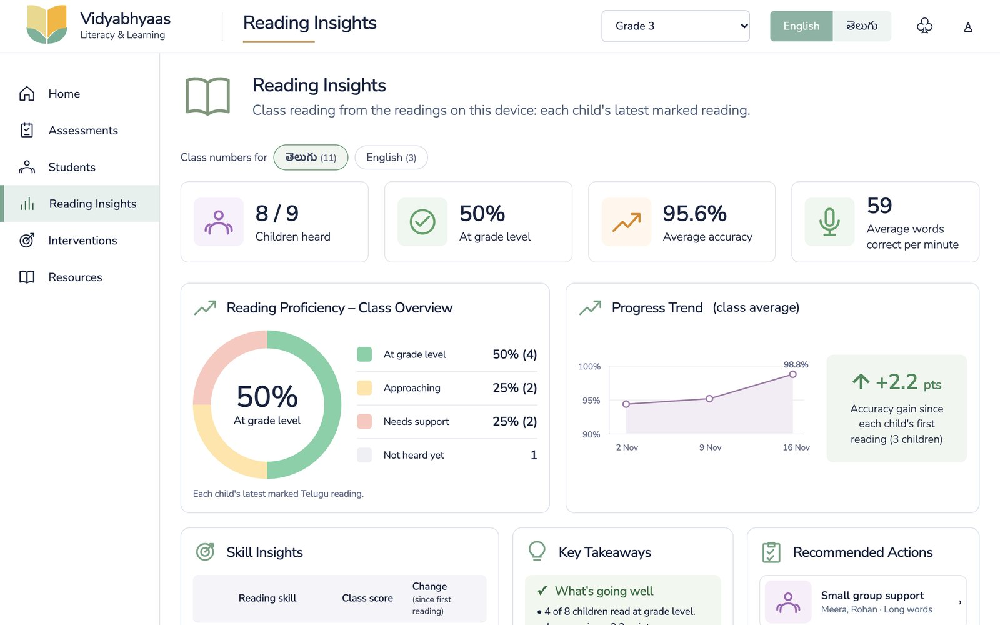

Oral reading assessment · Telugu and English
Hear every child read. Know what to teach next.
A child reads a page of their own SCERT textbook aloud. Aksharabhyaas marks every word, names the letters that broke, and gives the teacher practice for exactly those words.
వెంటనేventane బాధపడుకుంటూbaadhapadukuntoo read as బాలుడిబాలుడ్నిbaaludni ఎత్తుకున్నది.ettukunnadi read as ఆశర్యంఆశ్చర్యం!aashcharyam బాలునికిbaaluniki ఏంem కాలేదు.kaaledu
What broke: conjunct letters, in 3 of the 4 errors.
Practice next: బాలుడ్ని · ఆశ్చర్యం · నడుస్తుంటే, then a re-read.
The gap
A mark says a child is behind. It does not say why.
Oral reading is checked rarely, on paper, and the results arrive after the lesson has moved on. They do not say which letters or words broke: guninthalu, ottulu, or fluency. So the child is given the whole chapter again instead of the one thing that broke.
Teachers know a child's reading the moment they hear it. What they lack is the time to hear every child often, and the quietest child is usually heard least.
How it works
One minute of reading becomes a plan for tomorrow.
Pick a child
The class list opens on whoever has not been heard yet.
The child reads
About a minute from their own textbook, on a full screen with nothing else on it.
Every word is marked
The app knows the words on the page and matches the voice against them: read, misread or missed. It reports accuracy and words correct per minute.
The trouble gets a name
Conjunct letters, double letters, long words or pace, worked out from which kind of word broke.
Practice, then a re-read
Short practice on exactly those words, then a re-read that shows whether it helped.
The app
Built and working today.
Screens from the working app, using a sample class. The interface runs fully in Telugu or English.


Why teachers can rely on it
Built for an assessment, where a wrong mark matters.
It checks against the page
General speech-to-text guesses what a speaker meant and quietly fixes mistakes. Aksharabhyaas knows the passage before the child begins, matches the voice against those exact words, and keeps what it heard for each one.
The teacher has the final say
Any word can be re-marked with a tap. The app does the listening and the arithmetic; the teacher decides.
Telugu first
Built for Telugu script, including guninthalu and ottulu, with an easy romanised spelling under each word. English runs through the same steps.
Nothing new to buy or print
One ordinary Android phone serves a whole class. Passages come from the SCERT textbooks the state already owns, and records belong to the state, in line with the DPDP Act.
Where it stands
Ready for a classroom pilot.
Working today
- Word-by-word scoring on real SCERT Telugu passages
- Detailed read report and class insights
- Practice on the words that broke, and a re-read
- Full Telugu and English interface
Next
- Speech recognition on the phone itself, so it runs offline with no cost per reading
- Testing with children's voices in real classrooms
The pilot we propose
Government schools, two grades, one term, in Telugu and English. We report each child's reading at the start and end of term, and measure how often the app agrees with the teacher.
Team
Founded by Bhavani Srikrishna Chavali.
The name comes from అక్షరాభ్యాసం, the day a child begins learning letters.
Contact
Schools, departments and partners.
Write to us about a pilot, a demo, or working together.
hello@aksharabhyaas.com